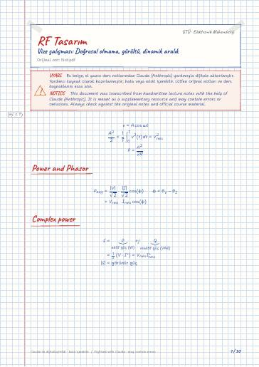

Haberleşme için RF Sistem Tasarımı · Dijital ders notu
Vize çalışması: Doğrusal olmama, gürültü, dinamik aralık
- Ders
- Haberleşme için RF Sistem Tasarımı (ELM667)
- Dönem
- 7. Dönem · 2024–2025 Güz
- Biçim
- PDF · 30 sayfa · 0,7 MB · el yazısı görünümlü LaTeX
- Orijinal not
- Not.pdf

The digital notes were created from the handwritten notes with the help of Claude (Anthropic); they are meant as a supplementary resource and may contain errors. Always rely on the original notes and the official course materials.
Bu notta neler var?
- Power and Phasor
- Complex power
- Maximum power
- 1 Harmonic distortion
- 2 Gain compression
- 3 Desensitization
- 4 Intermodulation
- Noise
- Input referred Noise
- How to find input referred Noise
- 1 Cancel sources (gerilim kaynağı kısa, akım kaynağı açık devre)
- 3 Sum of squares
- Noise Figure (NF) / Noise Factor (F)
- 1 Noise coming from R_s (v_n^2=0, I_n^2=0)
- 2 Noise coming from v_n^2 (v_n,R_s^2=0, I_n^2=0)
- 3 Noise coming from i_n^2 (v_n^2=0, v_n,R_s^2=0)
- Noise in Cascaded Stages
- Noise in passive Reciprocal Circuit
- Reciprocity
- Noise power in Rx input
- Receive Noise Floor
- Receiver noise Floor
- Receiver SNR & Noise
- Calculate NF total
- Sensitivity and Dynamic Range
- Dynamic Range
- SFDR
- Spur-free Dynamic Range
Notun metni
Düz metin olarak göster (formüller ve çizimler yoktur)
Power and Phasor
a_1, a_3 have different signs
girişin genliği çok yükselirse kazanç düşer
ω_1 frekansında olan sinyal:
Vericinin ikinci harmoniğine kadar bastırılmalıdır ki bu alıcı
en az 45 dB bastırılmalıdır.
if system linear ⇒ a_1A
if A_IIP3 more linear system
Compute IIP3 of the amplifier such that IM3 product falling at ω_3 is 20 dB below the desired signal ? ( → A_o,IM3 ??, → A_o,s )
Input referred Noise
3 Sum of squares
To decrease v_in,n^2 , increase g_m
genellikle amplifierlar 10,15 dB üstü tasarlanır ki gürültüsü az olsun
Noise Figure (NF) / Noise Factor (F)
[önemli]F = SNR_inSNR_out > 1
sadece kaynağa bağlı
Basılı gürültü modeli şeması ( V_s , R_s , v_n^2 , i_n^2 , gürültüsüz A_v kutusu, R_in ); el yazısıyla v_n,R_s^2 kaynağı eklenmiş
R_P R_s → No noise effect coming from R_P
Çalışma sorusuna bak
Noise in Cascaded Stages
mutlaka girişte düşük gürültülü ve NF düşük olan amplifier seçilmeli
Noise in passive Reciprocal Circuit
pasif devrelerde olabiliyor
Noise figure artırır
Noise power in Rx input
1Hz'lik bantta kT kadar gürültü gücü bulunur
Receive Noise Floor
Noise floor = Receiver input equivalent noise
N_o : output noise power excluding R_s kaynak gürültü düşünülmediğinde
Receiver noise Floor
Receiver SNR & Noise
output noise = input noise + N_A
Calculate NF total
Calculate Noise floor B = 5 MHz
Sensitivity and Dynamic Range
Sensitivity is the minimum which can be detected at output P [dBm]
A GSM receiver has
what is the minimum acceptable signal power ?
Spur-free Dynamic Range